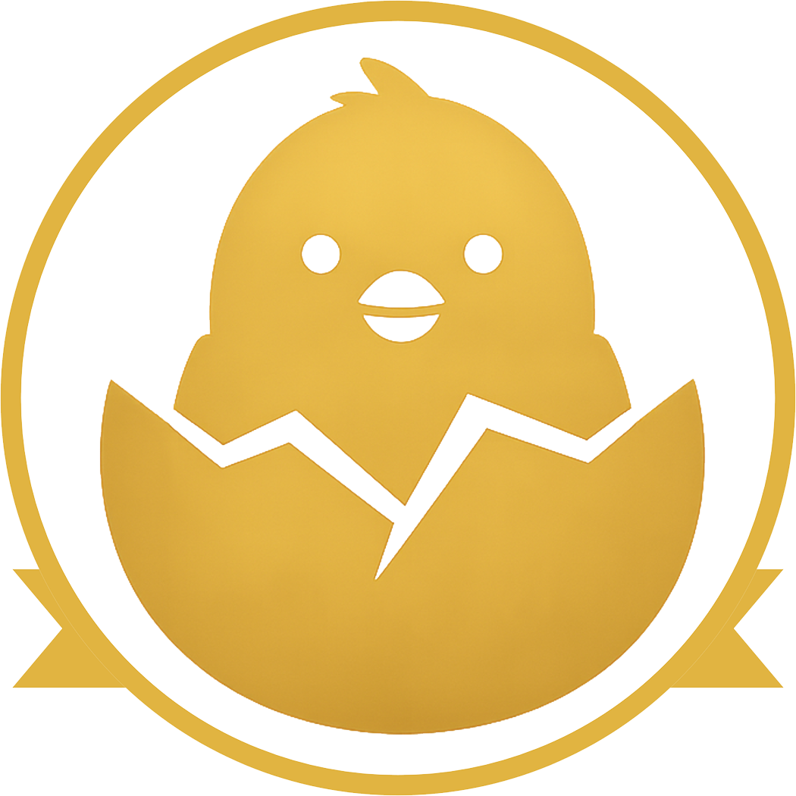

ひよこコース（基礎技術習得コース）
ひよこコースは、リペア未経験の方から中級者の方までを対象とした基礎技術習得コースです。RBS研修施設にて、計4日間の実技講習を通じて、現場で活用できるリペア技術の基礎を学びます。
研修期間を最大限有効に活用するため、受講前にRBS技術講師が監修した「5つの技法」解説動画をご視聴いただきます。事前に技術の考え方や作業の流れを理解しておくことで、講習当日は実践に集中しながら技術の習得を進めることができます。
講習では、実際の補修を想定した課題に取り組みながら、道具の扱い方、補修工程、仕上げの精度などを段階的に習得していきます。限られた期間の中で、技術の基礎を確実に身につけることを目的としたカリキュラムです。
また、講習終了後も技術向上を継続していただけるよう、アフターフォローとして作業添削サポートをご用意しています。ご自宅に補修用サンプルをお送りし、作業後に返送いただいた内容をもとに、講師が添削とアドバイスを行います。
予習・実技・復習のサイクルを通じて、技術を確実に身につけていくための環境を整えています。本気でリペア技術を習得したい方に向けて設計されたコースです。
